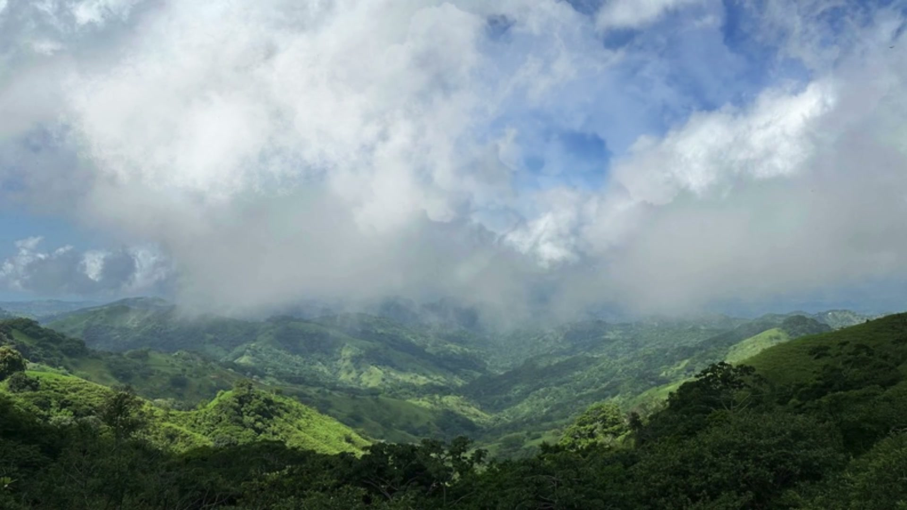
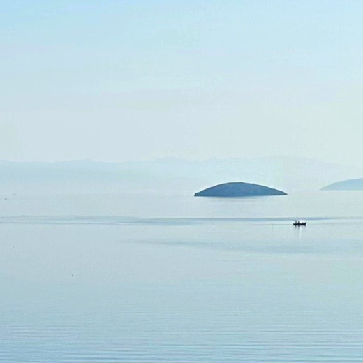

For yourself
Sit comfortably and close your eyes. Stay with one raga from its opening to its final note.

Maharishi Gandharva Veda
STATION 01
for a continuous
harmonizing effect
The words will fade so your eyes can rest. Move or tap to bring them back.
Gandharva Veda gives each part of the day its own ragas, and Peace Radio plays the one for your hour. The light on the sea at Ayvalık changes with it.
Sit comfortably and close your eyes. Stay with one raga from its opening to its final note.
Leave it playing softly through the day, at home, at work, in classrooms and in waiting rooms.
Gandharva Veda divides the day into eight watches of three hours, each with its own ragas. The radio reads your time zone, so the raga you hear belongs to the hour you are living in.
“Gandharva Veda music makes a precious contribution to the creation of world peace: the use of sound, melody, and rhythm to restore balance and harmony in the mind, body, behavior, and environment.”Maharishi Mahesh Yogi, 1991
I felt deep pulses of blissful energy throughout my body, and behind it all was pure, unmovable silence, eternity.S.W., Thailand
A tree blooms for the first time in ten years; workers on site are calmer, clients are happy.B.C., landscape architect, Türkiye
At live concerts with more than 1,800 listeners, mood questionnaires showed significant drops in tension and other negative feelings after the ragas, and a rise in positive ones.
Travis, Morehead & Parim (2023), International Journal of Psychological Studies 15(1), 8. Read the paper
Each month, on the evening of the full moon, Gandharva Veda musicians play live for a global audience.

RadyoHarmoni is free and carries no advertising. It is presented by the Academy of Arts for Enlightenment.
Gandharva Veda brings harmony, and Rain Radio plays ragas for balance in nature. The sky over Monte Verde changes with it.
Connect a speaker and place it outdoors, and let it play softly, continuously.
“Gandharva music is that melody from which all the melodies have sprung … the eternal music of nature.”“Gandharva music is that melody from which all the melodies have sprung. When we say Indian classical music or Western modern music, these are different aspects of Gandharva music, the eternal music of nature. All languages and melodies spring from the infinite order that is maintained in nature in its different rhythms, harmonies, and frequencies.”Maharishi Mahesh Yogi
“Those who listen to it, they’ll have the direct effect of it. But even those who do not listen, the quality of the environment, the quality of the ecology rises in the character of harmony. Harmony. Integration, and that neutralizes negative trends and tendencies in the world.”Maharishi Mahesh Yogi
Mustard and fenugreek plants that heard Raga Bhairav in the morning and Raga Yaman Kalyan in the evening germinated and grew better than plants without music, with more chlorophyll, less of the stress marker hydrogen peroxide, and stronger protective enzymes.
Vir, Chauhan, Kumar, Saini & Saini (2026), Impact of Indian classical raga on plant growth and biochemical parameters in Rai and Methi. International Journal of Applied Research 12(5), 281–288. Read the paper
In a 60-day study with sixty dairy cows, the cows that heard music gave significantly more milk each day than cows without it, and those that heard raga music showed lower levels of the stress hormone cortisol.
Cao, Zhao, Feng et al. (2025), Effects of Raga music and Chinese five-element music on milk production, antioxidant, neuroendocrine, immune, and welfare indicators in dairy cows. Frontiers in Veterinary Science 12, 1623026. Read the paper
In a study of thirty rose plants, the roses that heard Indian classical music grew the longest stems between their leaves, longer than roses in silence or with rock and pop. Play Rain Radio and the rose here opens with the music.
Chivukula & Ramaswamy (2014), Effect of Different Types of Music on Rosa Chinensis Plants. International Journal of Environmental Science and Development 5(5), 431–434. Read the paper
Share your seascape or landscape photos to be featured as the background of the player.
New ragas, the live full moon concerts and photographs from listeners, a few times a year.